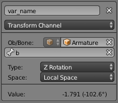
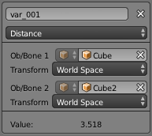

Drivers Panel¶
Drivers Panel.
This panel is located in the Graph Editor with the mode set to Drivers.
The drivers panel is for setting up Driver Variables or a Scripted Expression which will determine the value of the Driver Value.
Settings¶
- Update Dependencies
- This will force an update for the Driver Value dependencies.
- Remove Driver
- Removes the driver from the object.
- Type
The type of calculation to use on the set of Driver Variables. (If you only have one driver variable there is no real difference between average, sum, minimum and maximum)
- Average Value
- Uses the average value of the referenced Driver Variables.
- Sum Values
- Uses the sum of the referenced Driver Variables.
- Scripted Expression
- Uses a Scripted Expression. See Expression. You must write a Python expression which performs your own calculations on the Driver Variables.
- Minimum Value
- Uses the lowest value from the referenced Driver Variables.
- Maximum Value
- Uses the highest value from the referenced Driver Variables.
- Expression
- Scripted Expression. Here you can add real numbers, math operators, math functions, python properties, driver functions. See Driver Expression below for some examples.
- Show Debug Info
- Shows the Driver Value. The current value of the variables or scripted expression.
- Add Variable
- Adds a new Driver Variable.

Setup of a Single Property.

Transform Channel Setup. |

Distance Setup. |
Driver Variables¶
- Name
- Name to use for scripted expressions/functions. No spaces or dots are allowed and must start with a letter.
- Variable Type
The type of variable to use.
- Single Property
Use the value from some RNA property. For example, the Ambient shading color from a material. First select the type of ID-block, then the ID of the ID-block, then copy and paste an RNA property
Ctrl-V.- ID-Type
- The ID-Block type, example, Key, Image, Object, Material.
- ID
- The ID of the ID-Block type, example, “Material.001”.
- RNA Path
- The RNA id name of the property, example, ‘ambient’ from material shading.
- Transform Channel
Use one of the Transform channels from an object or bone.
- ID
- ID of the object, example, Cube, Armature, Camera.
- Bone
- ID of the Armature bone, example, “Bone”, “Bone.002”, “Arm.r”. This option is for armatures.
- Type
- Example, X Location, X Rotation, X Scale.
- Space
- World Space, Transform Space, Local Space.
- Rotational Difference
- Use the rotational difference between two objects or bones.
- Distance
- Use the distance between two objects or bones.
- Value
- Shows the value of the variable.